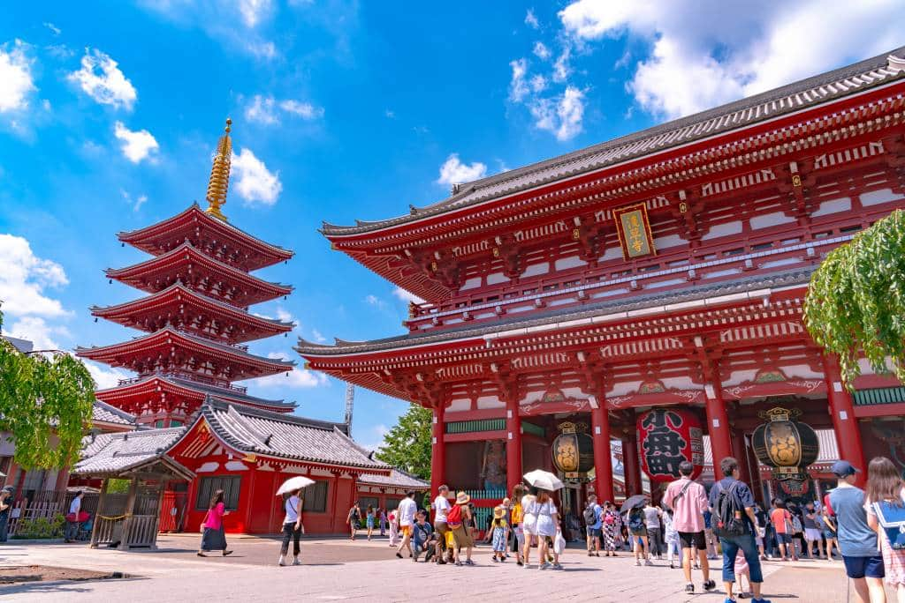
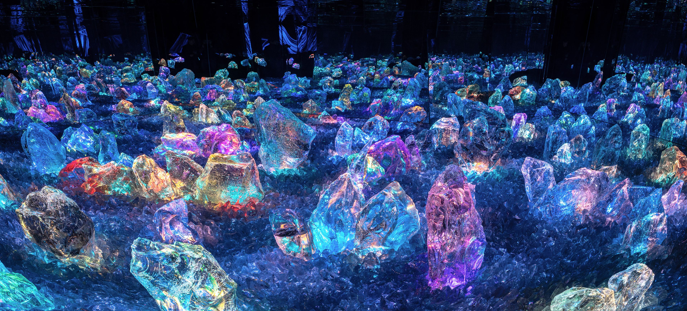
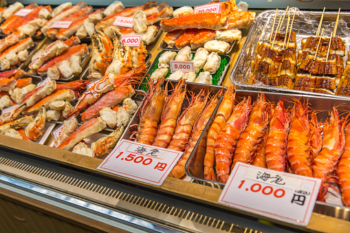
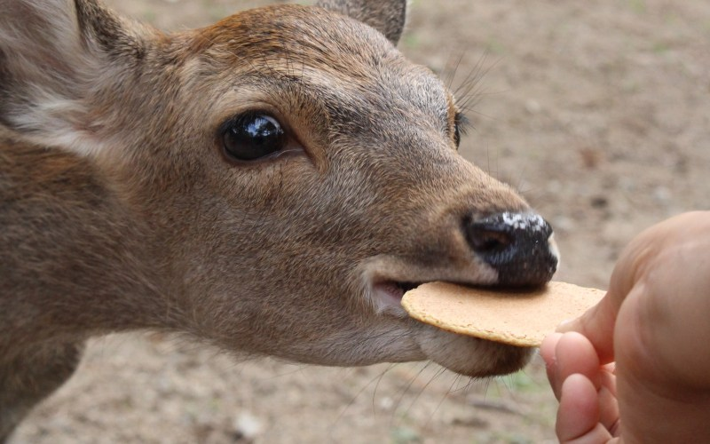

🗼 TokioTokyo
11–16 de mayo · 5 nochesMay 11–16 · 5 nights
🏨 Shinagawa Prince Hotel
108-8611 Takanawa 4-10-30, Minato, Tokyo
Lugares DestacadosHighlights

🚦 Cruce de ShibuyaShibuya Crossing
El cruce peatonal más famoso del mundo — 3,000 personas por ciclo.
The world's most famous crossing — 3,000 people per cycle.
💡 Vista desde el Starbucks 2do pisoView from Starbucks 2nd floor

⛩️ Meiji Jingū
Santuario rodeado de 70,000 árboles en el corazón de Tokio.
Shinto shrine surrounded by 70,000 trees in the heart of Tokyo.
💡 Torii al amanecer = mágicosTorii at sunrise = magical

🏮 Sensō-ji · Asakusa
El templo más antiguo de Tokio, con la puerta Kaminarimon.
Tokyo's oldest temple, with the iconic Kaminarimon gate.
💡 Ir temprano antes de las multitudesGo early before the crowds

🥋 Sumo en RyōgokuSumo at Ryōgoku
Natsu Basho — el torneo nacional de verano. 1,500 años de historia.
Natsu Basho — the national summer tournament. 1,500 years of history.
💡 Llegar a las 3pm para los combates principalesArrive 3pm for the main bouts
🌃 Shinjuku de NocheShinjuku at Night
Neón, ramen y los callejones más atmosféricos de Japón.
Neon, ramen, and Japan's most atmospheric alleyways.
💡 Golden Gai: 200 bares de 6 asientosGolden Gai: 200 bars with 6 seats each

🗻 Hakone
Ropeway sobre un volcán activo. Vistas del Monte Fuji en día claro.
Ropeway over an active volcano. Views of Mt. Fuji on clear days.
💡 Loop completo con Hakone Free PassFull loop with Hakone Free Pass

🎮 Akihabara
Paraíso de la electrónica, manga y cultura pop japonesa.
Paradise for electronics, manga, and Japanese pop culture.
💡 Gachapon = mejores souvenirs baratosGachapon = best cheap souvenirs

🌳 Ueno Park
5 museos nacionales, zoo y templo flotante en estanque.
5 national museums, zoo, and a floating temple on a pond.
💡 Plano y lleno de bancas — ideal para descansarFlat and full of benches — perfect to rest

🛒 Ameyoko · Ueno
400+ puestos de comida callejera y mariscos frescos.
400+ stalls of street food and fresh seafood.
💡 Kushiage y cangrejo al pasoKushiage and crab on the go

🍢 Omoide Yokocho
Callejón de yakitori humeante en Shinjuku, desde los años 50.
Smoky yakitori alley in Shinjuku, since the 1950s.
💡 La Tokio más auténtica en 50 metrosThe most authentic Tokyo in 50 meters
Eventos EspecialesSpecial Events
🗻 Martes 12 mayo — Todo el díaTuesday May 12 — All day
Hakone Day Trip
Ropeway de 4km sobre el volcán Owakudani — fumarolas de azufre, géiseres y, en día claro, el Monte Fuji en todo su esplendor. Lago Ashi en barco pirata. Uno de los paisajes más dramáticos de Japón.
4km ropeway over Owakudani volcano — sulfur fumaroles, geysers, and on a clear day, Mt. Fuji in full splendor. Lake Ashi by pirate ship. One of Japan's most dramatic landscapes.
🥋 Miércoles 13 mayo — 3pmWednesday May 13 — 3pm
Natsu Basho — Torneo de SumoNatsu Basho — Sumo Tournament
El torneo nacional de verano en el Ryōgoku Kokugikan. Arte marcial shinto de 1,500 años. Los luchadores arrojan sal al ring en un ritual de purificación. Chanko-nabe, el guiso de los luchadores, se sirve en el estadio.
The national summer tournament at Ryōgoku Kokugikan. A 1,500-year-old Shinto martial art. Wrestlers throw salt onto the ring in a purification ritual. Chanko-nabe, the wrestlers' stew, is served inside the stadium.

🎎 Viernes 15 mayo — 1pmFriday May 15 — 1pm
Sanja Matsuri
El festival más famoso de Tokio — sacerdotes y geishas en trajes del período Edo desfilan por Asakusa con músicos en carrozas decoradas. Uno de los tres grandes festivales de Tokio.
Tokyo's most famous festival — priests and geishas in Edo-period costumes parade through Asakusa with musicians on decorated floats. One of Tokyo's three great festivals.

⚾ Viernes 15 mayo — 5pmFriday May 15 — 5pm
Giants vs BayStars · Tokyo Dome
¡Béisbol japonés! Los fanáticos cantan en coro — cada bateador tiene su propio himno. Vendedoras de cerveza con barriles en la espalda. Una experiencia completamente distinta a la MLB.
Japanese baseball! Fans sing in unison — each batter has their own anthem. Beer vendors carry kegs on their backs. A completely different experience from MLB.
Día a DíaDay by Day
11
Lun · MayoMon · May
✈️ Llegada a Tokio · Narita → Shinagawa✈️ Arrival in Tokyo · Narita → Shinagawa
Llegada por la tardeAfternoon arrival
✈️ Al llegar al aeropuertoUpon arriving at the airport
Efectivo en cajero 7-Eleven del aeropuertoCash at the airport 7-Eleven ATM
Sacar ¥30,000–¥50,000 para el grupo. Los cajeros de 7-Eleven aceptan tarjetas internacionales. Japón sigue siendo muy efectivo — hay lugares donde no aceptan tarjetas.Withdraw ¥30,000–¥50,000 for the group. 7-Eleven ATMs accept international cards. Japan is still very cash-based — some places don't accept cards.
Sacar ¥30,000–¥50,000 para el grupo. Los cajeros de 7-Eleven aceptan tarjetas internacionales. Japón sigue siendo muy efectivo — hay lugares donde no aceptan tarjetas.Withdraw ¥30,000–¥50,000 for the group. 7-Eleven ATMs accept international cards. Japan is still very cash-based — some places don't accept cards.
Comprar boletos N'EX (Narita Express)Buy N'EX (Narita Express) tickets
En las taquillas o máquinas de la estación de tren del aeropuerto. Lleva directo a Shinagawa (~70 min, ~¥3,000). Este tren es cómodo y tiene espacio para maletas.At the airport train station ticket counters or machines. Goes directly to Shinagawa (~70 min, ~¥3,000). This train is comfortable and has luggage space.
En las taquillas o máquinas de la estación de tren del aeropuerto. Lleva directo a Shinagawa (~70 min, ~¥3,000). Este tren es cómodo y tiene espacio para maletas.At the airport train station ticket counters or machines. Goes directly to Shinagawa (~70 min, ~¥3,000). This train is comfortable and has luggage space.
Tarjetas SuicaSuica Cards
Comprar en el aeropuerto o en Shinagawa Station. Si hay mucha fila en Narita, priorizar el tren — se compran después en Shinagawa. Las Suica sirven para todo el metro y convenience stores.Buy at the airport or at Shinagawa Station. If there's a long line at Narita, prioritize the train — buy them later at Shinagawa. Suica cards work for all subways and convenience stores.
Comprar en el aeropuerto o en Shinagawa Station. Si hay mucha fila en Narita, priorizar el tren — se compran después en Shinagawa. Las Suica sirven para todo el metro y convenience stores.Buy at the airport or at Shinagawa Station. If there's a long line at Narita, prioritize the train — buy them later at Shinagawa. Suica cards work for all subways and convenience stores.
💡 Shinagawa Prince Hotel está justo cruzando la calle desde Shinagawa Station (salida Este). Esta estación será nuestro hub todos los días.Shinagawa Prince Hotel is right across the street from Shinagawa Station (East exit). This station will be our daily hub.
🌆 Llegada al hotel (tarde/noche)Hotel arrival (late afternoon/evening)
Check-in Shinagawa Prince HotelCheck-in Shinagawa Prince Hotel
Dejar maletas, refrescarse. El hotel es grande y moderno — primera impresión de Japón. Tiene food court, tiendas y un 7-Eleven en el complejo.Drop bags, freshen up. The hotel is large and modern — first impression of Japan. It has a food court, shops, and a 7-Eleven in the complex.
Dejar maletas, refrescarse. El hotel es grande y moderno — primera impresión de Japón. Tiene food court, tiendas y un 7-Eleven en el complejo.Drop bags, freshen up. The hotel is large and modern — first impression of Japan. It has a food court, shops, and a 7-Eleven in the complex.
⚠️ Farmacia cierra a las 8pmPharmacy closes at 8pm — si necesitan medicamentos, ir antes de las 8pm. Está dentro del complejo del hotel.if you need medications, go before 8pm. It's inside the hotel complex.
🌙 Primera noche en JapónFirst night in Japan
Opción A (si hay energía):Option A (if energetic): Shibuya — solo 20 min en tren desde Shinagawa. Ver el cruce famoso iluminado de noche, comer algo, pasear. Regreso antes de medianoche. Shibuya — just 20 min by train from Shinagawa. See the famous crossing lit up at night, get food, stroll around. Return before midnight.
Opción B (si están cansados — lo más probable):Option B (if tired — most likely): Food court del hotel — ramen, sushi, curry japonés, todo disponible. Sin tener que salir. Hotel food court — ramen, sushi, Japanese curry, all available. No need to go out.
🛒 Meta antes de dormir: comprar un desayuno ligero en el 7-Eleven del hotel para mañana. Hay que salir en el tren de las 8:34am para Hakone.Goal before sleeping: buy a light breakfast at the hotel 7-Eleven for tomorrow. We need to leave on the 8:34am train for Hakone.
12
Mar · MayoTue · May
🗻 Hakone Day Trip + 🌃 Shinjuku de noche🗻 Hakone Day Trip + 🌃 Shinjuku at night
Día intenso ✨Intense day ✨
🌅 Mañana — HakoneMorning — Hakone
Shinkansen 8:34am desde ShinagawaShinkansen 8:34am from Shinagawa
Tren bala a Odawara (~35 min). En Odawara, comprar el Hakone Free Pass — incluye todos los transportes del loop y descuentos en atracciones (¥4,600/persona).Bullet train to Odawara (~35 min). At Odawara, buy the Hakone Free Pass — includes all transport on the loop and discounts at attractions (¥4,600/person).
Tren bala a Odawara (~35 min). En Odawara, comprar el Hakone Free Pass — incluye todos los transportes del loop y descuentos en atracciones (¥4,600/persona).Bullet train to Odawara (~35 min). At Odawara, buy the Hakone Free Pass — includes all transport on the loop and discounts at attractions (¥4,600/person).
El Loop de Hakone (en orden):The Hakone Loop (in order):
① Hakone Tozan Railway — tren de cremallera que zigzaguea la montaña entre jardines de hortensias
② Hakone Tozan Cable Car — hacia Sounzan
③ Hakone Ropeway — 4km sobre el volcán activo. Vistas de Owakudani con humo de azufre y fumarolas. En día claro, el Monte Fuji aparece al fondo — una de las fotos más icónicas de Japón
④ Lago Ashi (Ashinoko) — crucero en barco pirata con vistas del Fuji reflejado en el agua
⑤ Bus Hakone de vuelta a Odawara① Hakone Tozan Railway — rack train zigzagging up the mountain through hydrangea gardens
② Hakone Tozan Cable Car — toward Sounzan
③ Hakone Ropeway — 4km over the active volcano. Views of Owakudani with sulfur smoke and fumaroles. On a clear day, Mt. Fuji appears in the background — one of Japan's most iconic photos
④ Lake Ashi (Ashinoko) — pirate ship cruise with views of Fuji reflected in the water
⑤ Hakone Bus back to Odawara
① Hakone Tozan Railway — tren de cremallera que zigzaguea la montaña entre jardines de hortensias
② Hakone Tozan Cable Car — hacia Sounzan
③ Hakone Ropeway — 4km sobre el volcán activo. Vistas de Owakudani con humo de azufre y fumarolas. En día claro, el Monte Fuji aparece al fondo — una de las fotos más icónicas de Japón
④ Lago Ashi (Ashinoko) — crucero en barco pirata con vistas del Fuji reflejado en el agua
⑤ Bus Hakone de vuelta a Odawara① Hakone Tozan Railway — rack train zigzagging up the mountain through hydrangea gardens
② Hakone Tozan Cable Car — toward Sounzan
③ Hakone Ropeway — 4km over the active volcano. Views of Owakudani with sulfur smoke and fumaroles. On a clear day, Mt. Fuji appears in the background — one of Japan's most iconic photos
④ Lake Ashi (Ashinoko) — pirate ship cruise with views of Fuji reflected in the water
⑤ Hakone Bus back to Odawara
Almuerzo ligero en HakoneLight lunch in Hakone — precios altos en zona turística. Un onigiri, ramen o soba sencillo — guardamos el hambre para la cena en Tokio.prices are high in the tourist area. A simple onigiri, ramen, or soba — save your appetite for dinner in Tokyo.
💡 El Fuji solo se ve si hay cielo despejado — en Mayo hay buenas probabilidades pero no garantías. El paisaje de Owakudani con géiseres vale el viaje de todas formas.Mt. Fuji is only visible with clear skies — May has good odds but no guarantees. The Owakudani geyser landscape is worth the trip regardless.
☀️ Regreso a TokioReturn to Tokyo
Salir de Hakone antes de las 3pmLeave Hakone before 3pm
Shinkansen de regreso a Shinagawa. Breve descanso en el hotel, cambiarse de ropa. La noche en Shinjuku empieza a las 5pm.Shinkansen back to Shinagawa. Brief rest at the hotel, change clothes. The Shinjuku night starts at 5pm.
Shinkansen de regreso a Shinagawa. Breve descanso en el hotel, cambiarse de ropa. La noche en Shinjuku empieza a las 5pm.Shinkansen back to Shinagawa. Brief rest at the hotel, change clothes. The Shinjuku night starts at 5pm.
🌙 Noche — Shinjuku (5pm)Evening — Shinjuku (5pm)
Mirador Gobierno Metropolitano de TokioTokyo Metropolitan Government Observatory — Gratuito. Panorámica de 360° de toda la ciudad al atardecer. En día claro se ve el Fuji desde aquí también.Free. 360° panoramic city view at sunset. On a clear day you can also see Mt. Fuji from here.
Omoide Yokocho (Callejón de los RecuerdosMemory Lane) — Callejón estrecho con puestos de yakitori humeantes desde los años 50. La Tokio más auténtica en 50 metros.Narrow alley with smoky yakitori stalls since the 1950s. The most authentic Tokyo in 50 meters.
Godzilla Head — La cabeza gigante asoma del techo del Hotel Gracery. Foto obligatoria.The giant head peeks out from the Hotel Gracery rooftop. A must-take photo.
Hanazono Shrine — Santuario shinto en pleno Shinjuku. Tranquilo y místico entre el caos de la ciudad.Shinto shrine in the heart of Shinjuku. Quiet and mystical amid the city chaos.
Golden Gai — Laberinto de 200 bares minúsculos (6 asientos cada uno). El bar crawl más único del mundo. Se puede cenar aquí también.Maze of 200 tiny bars (6 seats each). The world's most unique bar crawl. You can also dine here.
🗺️ Tour de 1.3 millas, ~1 hora caminando. La cena puede ser en cualquier punto del recorrido — no hay lugar malo en Shinjuku de noche.1.3-mile tour, ~1 hour walking. Dinner can be at any point along the route — nowhere is bad in Shinjuku at night.
13
Mié · MayoWed · May
🏮 Asakusa + 🛒 Ueno/Ameyoko + 🥋 Sumo (3pm)Sumo (3pm)
Día especial 🥋Special day 🥋
🌅 Mañana — AsakusaMorning — Asakusa
Tour de audio Asakusa (1hr, 0.7mi)Asakusa audio tour (1hr, 0.7mi)
Kaminarimon Gate → Nakamise Shopping Street → Hozomon Gate → Gojunoto (Pagoda de 5 pisos) → Sensō-ji Temple → Asakusa Shrine → Tienda de té → Estatua de Ichikawa Danjuro IX → Hanayashiki (el parque de diversiones más antiguo de Japón, desde 1853).Kaminarimon Gate → Nakamise Shopping Street → Hozomon Gate → Gojunoto (5-story Pagoda) → Sensō-ji Temple → Asakusa Shrine → Tea Shop → Ichikawa Danjuro IX statue → Hanayashiki (Japan's oldest amusement park, since 1853).
Kaminarimon Gate → Nakamise Shopping Street → Hozomon Gate → Gojunoto (Pagoda de 5 pisos) → Sensō-ji Temple → Asakusa Shrine → Tienda de té → Estatua de Ichikawa Danjuro IX → Hanayashiki (el parque de diversiones más antiguo de Japón, desde 1853).Kaminarimon Gate → Nakamise Shopping Street → Hozomon Gate → Gojunoto (5-story Pagoda) → Sensō-ji Temple → Asakusa Shrine → Tea Shop → Ichikawa Danjuro IX statue → Hanayashiki (Japan's oldest amusement park, since 1853).
💡 Asakusa es el Tokio más antiguo. El templo de 1,400 años frente a los rascacielos modernos es uno de los paisajes más emblemáticos de Japón.Asakusa is the oldest part of Tokyo. The 1,400-year-old temple against the modern skyline is one of Japan's most iconic views.
☀️ Mediodía — UenoMidday — Ueno
Mercado Ameyoko, UenoAmeyoko Market, Ueno
El mercado más animado de Tokio — 400+ puestos de comida callejera, mariscos frescos, ropa y electrónica. Probar: kushiage, camarones, cangrejo y snacks al paso.Tokyo's liveliest market — 400+ stalls of street food, fresh seafood, clothing, and electronics. Try: kushiage, shrimp, crab, and snacks on the go.
El mercado más animado de Tokio — 400+ puestos de comida callejera, mariscos frescos, ropa y electrónica. Probar: kushiage, camarones, cangrejo y snacks al paso.Tokyo's liveliest market — 400+ stalls of street food, fresh seafood, clothing, and electronics. Try: kushiage, shrimp, crab, and snacks on the go.
Ueno Park — pausa breveUeno Park — brief stop
Uno de los parques más grandes de Tokio. Hogar de 5 museos nacionales, el zoo de Ueno (el más antiguo de Japón, 1882) y el estanque Shinobazu con su templo budista flotante. Regresamos con más tiempo el día siguiente.One of Tokyo's largest parks. Home to 5 national museums, Ueno Zoo (Japan's oldest, 1882), and Shinobazu Pond with its floating Buddhist temple. We return for longer the next day.
Uno de los parques más grandes de Tokio. Hogar de 5 museos nacionales, el zoo de Ueno (el más antiguo de Japón, 1882) y el estanque Shinobazu con su templo budista flotante. Regresamos con más tiempo el día siguiente.One of Tokyo's largest parks. Home to 5 national museums, Ueno Zoo (Japan's oldest, 1882), and Shinobazu Pond with its floating Buddhist temple. We return for longer the next day.
🌆 Tarde — Torneo de SumoAfternoon — Sumo Tournament
Natsu Basho — Llegar al Ryōgoku Kokugikan a las 3pmNatsu Basho — Arrive at Ryōgoku Kokugikan at 3pm
Los combates más importantes (y los luchadores más grandes) son al final del día. El torneo termina ~6pm.The most important bouts (and biggest wrestlers) are at the end of the day. The tournament ends ~6pm.
Los combates más importantes (y los luchadores más grandes) son al final del día. El torneo termina ~6pm.The most important bouts (and biggest wrestlers) are at the end of the day. The tournament ends ~6pm.
Cultura del Sumo:Sumo Culture:
• Arte marcial shinto de más de 1,500 años — cada elemento del ritual tiene significado religioso
• Los rikishi arrojan sal al dohyo (ring) antes del combate — ritual de purificación
• El objetivo: sacar al rival del ring o hacer que toque el suelo con algo que no sean sus pies
• Se puede gritar apoyo con respeto — el silencio durante el combate es valorado
• Comida del estadio: chanko-nabe, el guiso que comen los luchadores• Shinto martial art over 1,500 years old — every element of the ritual has religious meaning
• Rikishi throw salt onto the dohyo (ring) before the bout — purification ritual
• The goal: push the opponent out of the ring or make them touch the ground with anything other than their feet
• You can shout encouragement respectfully — silence during the bout is valued
• Stadium food: chanko-nabe, the stew that wrestlers eat
• Arte marcial shinto de más de 1,500 años — cada elemento del ritual tiene significado religioso
• Los rikishi arrojan sal al dohyo (ring) antes del combate — ritual de purificación
• El objetivo: sacar al rival del ring o hacer que toque el suelo con algo que no sean sus pies
• Se puede gritar apoyo con respeto — el silencio durante el combate es valorado
• Comida del estadio: chanko-nabe, el guiso que comen los luchadores• Shinto martial art over 1,500 years old — every element of the ritual has religious meaning
• Rikishi throw salt onto the dohyo (ring) before the bout — purification ritual
• The goal: push the opponent out of the ring or make them touch the ground with anything other than their feet
• You can shout encouragement respectfully — silence during the bout is valued
• Stadium food: chanko-nabe, the stew that wrestlers eat
🎉 El Natsu Basho (Torneo de Verano) es uno de los 6 torneos anuales oficiales. Solo hay 3 en Tokio por año — conseguir boletos es un verdadero privilegio.The Natsu Basho (Summer Tournament) is one of 6 official annual tournaments. Only 3 are held in Tokyo per year — getting tickets is a true privilege.
14
Jue · MayoThu · May
🌳 Ueno Park + 🎮 Akihabara oor 🚦 Shibuya
Ritmo medioMedium pace
🌅 Mañana — Ueno ParkMorning — Ueno Park
Tour de audio Ueno Park (2hrs, 2.4mi)Ueno Park audio tour (2hrs, 2.4mi)
Estatua de Saigo Takamori → Kiyomizu Kannon Temple → Ueno Royal Museum → National Museum of Western Art → National Science Museum → Tokyo National Museum → Tokyo Metropolitan Art Museum → Ueno Zoo → Kanei-ji Pagoda → Tosho-gu Shrine → Ueno Daibutsu → Shinobazu-no-ike Bentendo Temple → Shitamachi Museum.Saigo Takamori Statue → Kiyomizu Kannon Temple → Ueno Royal Museum → National Museum of Western Art → National Science Museum → Tokyo National Museum → Tokyo Metropolitan Art Museum → Ueno Zoo → Kanei-ji Pagoda → Tosho-gu Shrine → Ueno Daibutsu → Shinobazu-no-ike Bentendo Temple → Shitamachi Museum.
Estatua de Saigo Takamori → Kiyomizu Kannon Temple → Ueno Royal Museum → National Museum of Western Art → National Science Museum → Tokyo National Museum → Tokyo Metropolitan Art Museum → Ueno Zoo → Kanei-ji Pagoda → Tosho-gu Shrine → Ueno Daibutsu → Shinobazu-no-ike Bentendo Temple → Shitamachi Museum.Saigo Takamori Statue → Kiyomizu Kannon Temple → Ueno Royal Museum → National Museum of Western Art → National Science Museum → Tokyo National Museum → Tokyo Metropolitan Art Museum → Ueno Zoo → Kanei-ji Pagoda → Tosho-gu Shrine → Ueno Daibutsu → Shinobazu-no-ike Bentendo Temple → Shitamachi Museum.
🪑 Ueno Park es plano y lleno de bancas. Perfecto para los papás — se pueden sentar cuantas veces necesiten sin sentirse mal.Ueno Park is flat and full of benches. Perfect for parents — sit down as many times as needed without feeling bad.
☀️ Tarde — A elegirAfternoon — Your choice
Opción A: AkihabaraOption A: Akihabara
Electric Town — el barrio de la electrónica, manga y arcades de varios pisos. Tiendas de 8 pisos de videojuegos retro, figuras de colección y mechas. Un mundo completamente aparte.Electric Town — the neighborhood of electronics, manga, and multi-floor arcades. 8-story stores of retro video games, collectible figures, and mechas. A world completely apart.
Electric Town — el barrio de la electrónica, manga y arcades de varios pisos. Tiendas de 8 pisos de videojuegos retro, figuras de colección y mechas. Un mundo completamente aparte.Electric Town — the neighborhood of electronics, manga, and multi-floor arcades. 8-story stores of retro video games, collectible figures, and mechas. A world completely apart.
Opción B: Tour de audio Shibuya (2hrs, 2.4mi)Option B: Shibuya audio tour (2hrs, 2.4mi)
Shibuya Scramble Square → Estatua de Hachiko → Shibuya Crossing → Shibuya 109 → Center-Gai → Mandarake → Koen-dori → Yoyogi Park → Omotesando Ave → Takeshita Street → Meiji Jingū.Shibuya Scramble Square → Hachiko Statue → Shibuya Crossing → Shibuya 109 → Center-Gai → Mandarake → Koen-dori → Yoyogi Park → Omotesando Ave → Takeshita Street → Meiji Jingū.
Shibuya Scramble Square → Estatua de Hachiko → Shibuya Crossing → Shibuya 109 → Center-Gai → Mandarake → Koen-dori → Yoyogi Park → Omotesando Ave → Takeshita Street → Meiji Jingū.Shibuya Scramble Square → Hachiko Statue → Shibuya Crossing → Shibuya 109 → Center-Gai → Mandarake → Koen-dori → Yoyogi Park → Omotesando Ave → Takeshita Street → Meiji Jingū.
🌙 NocheEvening
Cena libre — explorar el barrio donde terminamos, o volver a Shinagawa para cenar en el food court.Free dinner — explore the neighborhood we end up in, or return to Shinagawa to eat at the food court.
15
Vie · MayoFri · May
🎎 Sanja Matsuri (1pm) + ⚾ Giants (5pm)
¡Día doble especial!Double special day!
🌅 Mañana libreFree morning
Descanso o sights pendientes. Mañana tranquila antes del festival.Rest or pending sights. Quiet morning before the festival.
Última oportunidad para compras en Tokio antes de partir a Kioto mañana.Last chance for shopping in Tokyo before heading to Kyoto tomorrow.
🎎 Tarde — Sanja MatsuriAfternoon — Sanja Matsuri
Desfile Daigyoretsu — 1pm en AsakusaDaigyoretsu Parade — 1pm in Asakusa
Sacerdotes, geishas y funcionarios en trajes del período Edo desfilan desde Yanagi-dori → Umamichi St → Kaminarimon St → Kaminarimon Gate → Nakamise Shopping Street → Asakusa Shrine. Acompañados de músicos en carrozas decoradas.Priests, geishas, and officials in Edo-period costumes parade from Yanagi-dori → Umamichi St → Kaminarimon St → Kaminarimon Gate → Nakamise Shopping Street → Asakusa Shrine. Accompanied by musicians on decorated floats.
Sacerdotes, geishas y funcionarios en trajes del período Edo desfilan desde Yanagi-dori → Umamichi St → Kaminarimon St → Kaminarimon Gate → Nakamise Shopping Street → Asakusa Shrine. Acompañados de músicos en carrozas decoradas.Priests, geishas, and officials in Edo-period costumes parade from Yanagi-dori → Umamichi St → Kaminarimon St → Kaminarimon Gate → Nakamise Shopping Street → Asakusa Shrine. Accompanied by musicians on decorated floats.
El desfile incluye: música de festival, canciones tradicionales de bomberos, Danza Binzasara y Danza de la Garza Blanca.The parade includes: festival music, traditional firefighter songs, Binzasara Dance, and White Heron Dance.
⚠️ Se cancela en caso de lluvia. Revisar el pronóstico la noche anterior.Cancelled in case of rain. Check the forecast the night before.
⚾ Noche — Tokyo DomeEvening — Tokyo Dome
Llegar al Tokyo Dome para las 5pmArrive at Tokyo Dome by 5pm
Giants vs BayStars. El béisbol japonés (NPB) es una experiencia completamente distinta a la MLB:
• Los fanáticos cantan en coro — cada bateador tiene su propio himno oficial
• Trompetas, tambores y porristas coordinadas
• Las vendedoras de cerveza llevan barriles en la espalda y sirven en las gradas
• La comida es excelente: karaage, takoyaki, curry japonésGiants vs BayStars. Japanese baseball (NPB) is a completely different experience from MLB:
• Fans sing in unison — each batter has their own official anthem
• Trumpets, drums, and coordinated cheerleaders
• Beer vendors carry kegs on their backs and serve in the stands
• The food is excellent: karaage, takoyaki, Japanese curry
Giants vs BayStars. El béisbol japonés (NPB) es una experiencia completamente distinta a la MLB:
• Los fanáticos cantan en coro — cada bateador tiene su propio himno oficial
• Trompetas, tambores y porristas coordinadas
• Las vendedoras de cerveza llevan barriles en la espalda y sirven en las gradas
• La comida es excelente: karaage, takoyaki, curry japonésGiants vs BayStars. Japanese baseball (NPB) is a completely different experience from MLB:
• Fans sing in unison — each batter has their own official anthem
• Trumpets, drums, and coordinated cheerleaders
• Beer vendors carry kegs on their backs and serve in the stands
• The food is excellent: karaage, takoyaki, Japanese curry
Regresar al hotel a empacar para Kioto.Return to hotel to pack for Kyoto. Salida mañana antes del mediodía. Departing tomorrow before noon.
16
Sáb · MayoSat · May
🚅 Tokio → Kioto + 🏮 Tour GionTokyo → Kyoto + 🏮 Gion Tour
Día de tránsitoTransit day
🌅 MañanaMorning
Mañana libre — sights pendientes o descanso.Free morning — pending sights or rest.
Shinkansen Tokio → Kioto (~2h 15min)Shinkansen Tokyo → Kyoto (~2h 15min)
Los shinkansen corren cada 10–15 min — podemos ser flexibles con la hora. Salir antes del mediodía. Check-in DoubleTree Higashiyama.Shinkansen runs every 10–15 min — we can be flexible with the time. Depart before noon. Check-in at DoubleTree Higashiyama.
Los shinkansen corren cada 10–15 min — podemos ser flexibles con la hora. Salir antes del mediodía. Check-in DoubleTree Higashiyama.Shinkansen runs every 10–15 min — we can be flexible with the time. Depart before noon. Check-in at DoubleTree Higashiyama.
🌙 Noche — GionEvening — Gion
Tour de audio Gion (2hrs, 1.7mi)Gion audio tour (2hrs, 1.7mi)
Minamiza Kabuki Theater → Shirakawa Lane → Tatsumi Bridge → Shinmonzen-dori Street → Ichiriki Teahouse → Hanamikoji Street → Gion Corner → Yasui Konpira-gu Shrine → Kennin-ji Temple → Ebisu-jinja Shrine → Saryo Tsujiri Tea House.Minamiza Kabuki Theater → Shirakawa Lane → Tatsumi Bridge → Shinmonzen-dori Street → Ichiriki Teahouse → Hanamikoji Street → Gion Corner → Yasui Konpira-gu Shrine → Kennin-ji Temple → Ebisu-jinja Shrine → Saryo Tsujiri Tea House.
Minamiza Kabuki Theater → Shirakawa Lane → Tatsumi Bridge → Shinmonzen-dori Street → Ichiriki Teahouse → Hanamikoji Street → Gion Corner → Yasui Konpira-gu Shrine → Kennin-ji Temple → Ebisu-jinja Shrine → Saryo Tsujiri Tea House.Minamiza Kabuki Theater → Shirakawa Lane → Tatsumi Bridge → Shinmonzen-dori Street → Ichiriki Teahouse → Hanamikoji Street → Gion Corner → Yasui Konpira-gu Shrine → Kennin-ji Temple → Ebisu-jinja Shrine → Saryo Tsujiri Tea House.
🚫 Sobre las Geishas en Gion:About Geishas in Gion:
Tomar fotografías de geishas y maiko en Gion está prohibido por ordenanza municipal y puede resultar en una multa de hasta ¥10,000. No las sigan, no les bloqueen el paso y mantengan distancia. Observar con respeto desde lejos es bienvenido.Photographing geishas and maiko in Gion is banned by local ordinance and can result in a fine of up to ¥10,000. Do not follow them, do not block their path, and keep your distance. Observing respectfully from afar is welcome.
Tomar fotografías de geishas y maiko en Gion está prohibido por ordenanza municipal y puede resultar en una multa de hasta ¥10,000. No las sigan, no les bloqueen el paso y mantengan distancia. Observar con respeto desde lejos es bienvenido.Photographing geishas and maiko in Gion is banned by local ordinance and can result in a fine of up to ¥10,000. Do not follow them, do not block their path, and keep your distance. Observing respectfully from afar is welcome.
🌸 Primera noche en Kioto. El cambio de Tokio a Kioto se siente de inmediato — más silencioso, más tradicional, más íntimo.First night in Kyoto. The shift from Tokyo to Kyoto is felt immediately — quieter, more traditional, more intimate.
⛩️ KiotoKyoto
16–20 de mayo · 4 nochesMay 16–20 · 4 nights
🏨 DoubleTree by Hilton Kyoto Higashiyama
527 Misasagi Miyanomae-cho, Yamashina-ku, Kyoto 607-8456
Lugares DestacadosHighlights
⛩️ Fushimi Inari
Miles de torii naranjas. Al amanecer, sin turistas.
Thousands of orange torii. At sunrise, no tourists.
💡 Salir 6am — mágicoLeave at 6am — magical

🏯 Kinkaku-ji
El Pabellón Dorado — hoja de oro puro sobre el estanque.
The Golden Pavilion — pure gold leaf over the pond.
💡 Llegar ~4:30pm — luz perfectaArrive ~4:30pm — perfect light

🏯 Kiyomizudera
Plataforma de madera sobre el valle con vista panorámica de Kioto.
Wooden platform over the valley with panoramic Kyoto views.
💡 Las calles Ninenzaka y Sannenzaka = igualmente hermosasNinenzaka & Sannenzaka streets = equally beautiful

🎋 Arashiyama
Bosque de bambú de 500m que cruje con el viento.
500m bamboo forest that creaks in the wind.

🍜 Nishiki Market
"La cocina de Kioto" — 400m de sabores únicos.
"Kyoto's Kitchen" — 400m of unique flavors.
💡 Come caminando — es la normaEat while walking — it's the norm

⛩️ Nanzen-ji
Templo zen con un acueducto del período Meiji. Final de la Senda del Filósofo.
Zen temple with a Meiji-period aqueduct. End of the Philosopher's Path.
💡 Restaurante Okutan sirve tofu desde 1635Restaurant Okutan has served tofu since 1635

🎎 Distrito GionGion District
El barrio de las geishas. Callejones de madera del período Edo, farolillos y teahouses.
The geisha district. Edo-period wooden alleys, lanterns, and teahouses.

🌿 Senda del FilósofoPhilosopher's Path
2km junto a un canal bordeado de vegetación entre Ginkaku-ji y Nanzen-ji.
2km alongside a canal lined with greenery from Ginkaku-ji to Nanzen-ji.
💡 Plano y accesibleFlat and accessible

💡 teamLab Biovortex
Arte digital interactivo — 50+ instalaciones donde el arte responde a tu presencia.
Interactive digital art — 50+ installations where art responds to your presence.
💡 Ropa blanca o clara — brillas en fotosWhite or light clothing — you glow in photos

🏮 Pontocho
El callejón más atmosférico de Kioto — terrazas kawayuka sobre el río Kamo.
Kyoto's most atmospheric alley — kawayuka terraces over the Kamo River.
💡 Solo abren mayo–sept. Timing perfecto.Only open May–Sept. Perfect timing.
Eventos EspecialesSpecial Events
💡 Lunes 18 mayo — 5pmMonday May 18 — 5pm
teamLab Biovortex Kyoto
Arte digital interactivo — 50+ instalaciones donde el arte responde a tu presencia. 10,000 m² de experiencia única en el mundo. Ropa blanca o de colores claros — ¡brillarán en las fotos!
Interactive digital art — 50+ installations where art responds to your presence. 10,000 m² of a one-of-a-kind world experience. Wear white or light colors — you'll glow in photos!
Día a DíaDay by Day
17
Dom · MayoSun · May
⛩️ Fushimi Inari (6am) + 🎮 Osaka Festival
Día especial 🗻Special day 🗻
🌅 Amanecer — Fushimi InariSunrise — Fushimi Inari
Salir del hotel a las 6amLeave hotel at 6am
Miles de torii naranjas serpenteando la montaña. Sin turistas, luz dorada del amanecer, silencio total. Subir hasta Yotsutsuji (media montaña) para las mejores vistas de Kioto. Los senderos más altos son opcionales.Thousands of orange torii winding up the mountain. No tourists, golden sunrise light, total silence. Climb to Yotsutsuji (halfway up) for the best views of Kyoto. Higher trails are optional.
Miles de torii naranjas serpenteando la montaña. Sin turistas, luz dorada del amanecer, silencio total. Subir hasta Yotsutsuji (media montaña) para las mejores vistas de Kioto. Los senderos más altos son opcionales.Thousands of orange torii winding up the mountain. No tourists, golden sunrise light, total silence. Climb to Yotsutsuji (halfway up) for the best views of Kyoto. Higher trails are optional.
🌸 Uno de los momentos más mágicos de todo el viaje. Calzado cómodo y una botella de agua.One of the most magical moments of the entire trip. Comfortable shoes and a water bottle.
🍳 Desayuno merecidoWell-earned breakfast
Desayuno sentado después de la caminata matutina. Buscar una cafetería o restaurante japonés en la zona de Fushimi.Sit-down breakfast after the morning walk. Find a café or Japanese restaurant in the Fushimi area.
☀️ Mediodía — Nipponbashi · OsakaMidday — Nipponbashi · Osaka
Festival Nipponbashi (Den Den Town) — llegar antes del mediodíaNipponbashi Festival (Den Den Town) — arrive before noon
El festival de cultura pop y cosplay más grande de la región de Kansai. La calle principal se cierra al tráfico — miles de asistentes desfilan en trajes de anime, videojuegos y personajes populares. El festival celebra la identidad geek y otaku como parte legítima de la cultura japonesa moderna.The largest pop culture and cosplay festival in the Kansai region. The main street closes to traffic — thousands of attendees parade in anime, video game, and popular character costumes. The festival celebrates geek and otaku identity as a legitimate part of modern Japanese culture.
El festival de cultura pop y cosplay más grande de la región de Kansai. La calle principal se cierra al tráfico — miles de asistentes desfilan en trajes de anime, videojuegos y personajes populares. El festival celebra la identidad geek y otaku como parte legítima de la cultura japonesa moderna.The largest pop culture and cosplay festival in the Kansai region. The main street closes to traffic — thousands of attendees parade in anime, video game, and popular character costumes. The festival celebrates geek and otaku identity as a legitimate part of modern Japanese culture.
👴👵 Alternativa para papás: Tour guiado del Bosque de Bambú de Arashiyama — ritmo suave, guía bilingüe, vistas espectaculares. Contactar Visit Kansai para reservar.Alternative for parents: Guided tour of Arashiyama Bamboo Grove — slow pace, bilingual guide, spectacular views. Contact Visit Kansai to book.
🌙 Tarde/NocheAfternoon/Evening
Opción A:Option A: Regresar a Kioto ~3:30pm. Noche libre — descanso, más templos, o explorar el Gion nuevamente. Return to Kyoto ~3:30pm. Free evening — rest, more temples, or explore Gion again.
Opción B:Option B: Quedarse en Osaka y explorar Shinsekai — el barrio más retro, con la Torre Tsūtenkaku, kushikatsu y estética de los años 50. Stay in Osaka and explore Shinsekai — the most retro neighborhood, with Tsūtenkaku Tower, kushikatsu, and 1950s aesthetic.
Regla de oro en Shinsekai: nunca mojes el kushikatsu dos veces en la salsa. (Lo dice el cartel.) 🍢Golden rule in Shinsekai: never dip kushikatsu twice in the sauce. (The sign says so.) 🍢
18
Lun · MayoMon · May
🏯 Higashiyama + 🍜 Nishiki + 💡 teamLab (5pm)
Día especial ✨Special day ✨
🌅 Mañana — Tour HigashiyamaMorning — Higashiyama Tour
Tour de audio Higashiyama (1hr, 1.6mi)Higashiyama audio tour (1hr, 1.6mi)
Kiyomizudera Temple → Ninen-zaka & Sannen-zaka (calles empedradas del período Meiji, tiendas de artesanías) → Kodai-ji Temple → Nene-no-Michi Lane → Yasaka-jinja Shrine → Chion-in Temple → Shoren-in Temple.Kiyomizudera Temple → Ninen-zaka & Sannen-zaka (Meiji-period cobblestone streets, craft shops) → Kodai-ji Temple → Nene-no-Michi Lane → Yasaka-jinja Shrine → Chion-in Temple → Shoren-in Temple.
Kiyomizudera Temple → Ninen-zaka & Sannen-zaka (calles empedradas del período Meiji, tiendas de artesanías) → Kodai-ji Temple → Nene-no-Michi Lane → Yasaka-jinja Shrine → Chion-in Temple → Shoren-in Temple.Kiyomizudera Temple → Ninen-zaka & Sannen-zaka (Meiji-period cobblestone streets, craft shops) → Kodai-ji Temple → Nene-no-Michi Lane → Yasaka-jinja Shrine → Chion-in Temple → Shoren-in Temple.
🏨 El hotel está en pleno Higashiyama — muchas de estas paradas quedan a minutos caminando. Una de las rutas más hermosas de todo Kioto.The hotel is right in Higashiyama — many of these stops are just minutes away on foot. One of the most beautiful routes in all of Kyoto.
☀️ Tarde — Nishiki MarketAfternoon — Nishiki Market
Almuerzo en Nishiki MarketLunch at Nishiki Market
"La cocina de Kioto" — 400m de tiendas con tamagoyaki, dango, tofu frito, pulpos enteros a la plancha, té matcha y snacks imposibles de encontrar en otro lugar. Come mientras caminas — eso es lo correcto aquí."Kyoto's Kitchen" — 400m of shops with tamagoyaki, dango, fried tofu, whole grilled octopus, matcha tea, and snacks you can't find anywhere else. Eat while you walk — that's the norm here.
"La cocina de Kioto" — 400m de tiendas con tamagoyaki, dango, tofu frito, pulpos enteros a la plancha, té matcha y snacks imposibles de encontrar en otro lugar. Come mientras caminas — eso es lo correcto aquí."Kyoto's Kitchen" — 400m of shops with tamagoyaki, dango, fried tofu, whole grilled octopus, matcha tea, and snacks you can't find anywhere else. Eat while you walk — that's the norm here.
Regreso al hotel a descansar y cambiarse para teamLab. Ropa blanca o de colores claros.Return to hotel to rest and change for teamLab. Wear white or light-colored clothes.
🌙 teamLab (5pm)
teamLab Biovortex Kyoto — Entrada 5:00–5:30pmteamLab Biovortex Kyoto — Entry 5:00–5:30pm
Boletos ya comprados. 50+ instalaciones de arte digital interactivo donde el arte responde a tu presencia. Explorar sin prisa — pueden quedarse hasta 2–3 horas.Tickets already purchased. 50+ interactive digital art installations where art responds to your presence. Explore at leisure — you can stay 2–3 hours.
Boletos ya comprados. 50+ instalaciones de arte digital interactivo donde el arte responde a tu presencia. Explorar sin prisa — pueden quedarse hasta 2–3 horas.Tickets already purchased. 50+ interactive digital art installations where art responds to your presence. Explore at leisure — you can stay 2–3 hours.
🌊 Una de las experiencias más únicas del viaje. No tiene paralelo en ningún otro lugar del mundo.One of the most unique experiences of the trip. It has no parallel anywhere else in the world.
19
Mar · MayoTue · May
🌿 Senda del Filósofo + 🏯 Kinkaku-ji + 🥩 WagyuPhilosopher's Path + 🏯 Kinkaku-ji + 🥩 Wagyu
Día especial ✨Special day ✨
🌅 Mañana (10am)Morning (10am)
Tour de audio Senda del Filósofo (2hrs, 1.6mi)Philosopher's Path audio tour (2hrs, 1.6mi)
Inicio a las 10am: Nanzen-ji Temple → Eikan-do Zenrin-ji Temple → Inicio sur de la Senda → Otoyo Shrine → Daitoyo Bridge → Sakurabashi Bridge → Honen-in Temple → Ginkaku-ji Temple (Pabellón de Plata).Start at 10am: Nanzen-ji Temple → Eikan-do Zenrin-ji Temple → South start of the Path → Otoyo Shrine → Daitoyo Bridge → Sakurabashi Bridge → Honen-in Temple → Ginkaku-ji Temple (Silver Pavilion).
Inicio a las 10am: Nanzen-ji Temple → Eikan-do Zenrin-ji Temple → Inicio sur de la Senda → Otoyo Shrine → Daitoyo Bridge → Sakurabashi Bridge → Honen-in Temple → Ginkaku-ji Temple (Pabellón de Plata).Start at 10am: Nanzen-ji Temple → Eikan-do Zenrin-ji Temple → South start of the Path → Otoyo Shrine → Daitoyo Bridge → Sakurabashi Bridge → Honen-in Temple → Ginkaku-ji Temple (Silver Pavilion).
🪑 2km junto a un canal bordeado de vegetación exuberante. Plano y accesible — perfecto después de días intensos. Para en algún café con jardín a la mitad.2km alongside a canal lined with lush greenery. Flat and accessible — perfect after intense days. Stop at a garden café halfway through.
☀️ Tarde libreFree afternoon
Almuerzo tranquilo cerca de Ginkaku-ji. Café con jardín. Recarga de energía antes del atardecer.Quiet lunch near Ginkaku-ji. Garden café. Recharge before sunset.
🌅 Atardecer — Kinkaku-jiSunset — Kinkaku-ji
Kinkaku-ji — Pabellón Dorado al atardecerKinkaku-ji — Golden Pavilion at sunset
Cubierto de hoja de oro puro. La luz de media tarde lo hace brillar sobre el estanque — la foto más icónica de Kioto. Cierra a las 5pm — llegar ~4:00–4:30pm.Covered in pure gold leaf. The afternoon light makes it shine over the pond — Kyoto's most iconic photo. Closes at 5pm — arrive ~4:00–4:30pm.
Cubierto de hoja de oro puro. La luz de media tarde lo hace brillar sobre el estanque — la foto más icónica de Kioto. Cierra a las 5pm — llegar ~4:00–4:30pm.Covered in pure gold leaf. The afternoon light makes it shine over the pond — Kyoto's most iconic photo. Closes at 5pm — arrive ~4:00–4:30pm.
🌙 Cena especial — Wagyu · PontochoSpecial dinner — Wagyu · Pontocho
Cena Wagyu en PontochoWagyu Dinner in Pontocho
Carne de Wagyu cocinada en plancha teppan de hierro por un chef experto. El marmoleado se derrite a fuego lento — mantecoso y rico como ningún otro filete. Pontocho es el callejón más atmosférico de Kioto, iluminado con farolillos, paralelo al Río Kamo. Las terrazas kawayuka sobre el río solo abren mayo–septiembre. Timing perfecto.Wagyu beef cooked on a teppan iron plate by an expert chef. The marbling melts slowly — buttery and rich like no other steak. Pontocho is Kyoto's most atmospheric alley, lit with lanterns, parallel to the Kamo River. The kawayuka terraces over the river only open May–September. Perfect timing.
Carne de Wagyu cocinada en plancha teppan de hierro por un chef experto. El marmoleado se derrite a fuego lento — mantecoso y rico como ningún otro filete. Pontocho es el callejón más atmosférico de Kioto, iluminado con farolillos, paralelo al Río Kamo. Las terrazas kawayuka sobre el río solo abren mayo–septiembre. Timing perfecto.Wagyu beef cooked on a teppan iron plate by an expert chef. The marbling melts slowly — buttery and rich like no other steak. Pontocho is Kyoto's most atmospheric alley, lit with lanterns, parallel to the Kamo River. The kawayuka terraces over the river only open May–September. Perfect timing.
💰 ~¥15,500 / persona (~$100 USD). Reserva anticipada recomendada.person (~$100 USD). Advance reservation recommended.
🦌🏮 Nara & OsakaNara & Osaka
20–22 de mayoMay 20–22
🏨 DoubleTree by Hilton Osaka Castle
1-32-1 Shiromi, Chuo-ku, Osaka 540-0001
Lugares DestacadosHighlights

✨ Dotonbori
Canal de neón, takoyaki y el letrero Glico.
Neon canal, takoyaki, and the Glico sign.
💡 Foto con el cangrejo Kani DorakuPhoto with the Kani Doraku crab

🗼 Shinsekai
El barrio más retro de Osaka con la Torre Tsūtenkaku.
Osaka's most retro neighborhood with Tsūtenkaku Tower.
💡 Nunca dos veces en la salsa 🍢Never twice in the sauce 🍢

🐟 Kuromon Market
"La cocina de Osaka" — mariscos y delicias al paso.
"Osaka's Kitchen" — seafood and delicacies to go.
💡 Mejor almuerzo del viajeBest lunch of the trip

🦌 Ciervos de NaraNara Deer
1,000+ ciervos libres. Se inclinan por galletas.
1,000+ free deer. They bow for crackers.
💡 Shika senbei = galletas de ciervo ¥200Shika senbei = deer crackers ¥200

🏛️ Tōdai-ji · Nara
El Gran Buda de 15m en el edificio de madera más grande del mundo.
15m Great Buddha in the world's largest wooden building.

⛩️ Kasuga Taisha · Nara
Miles de faroles de piedra y bronce en el bosque sagrado.
Thousands of stone and bronze lanterns in the sacred forest.

🏯 Castillo de OsakaOsaka Castle
Cerca del hotel — el castillo más famoso de Japón.
Near the hotel — Japan's most famous castle.

⛩️ Namba Yasaka
El santuario con una cabeza de demonio gigante. Imperdible.
The shrine with a giant demon head. Unmissable.

🌆 Umeda Sky Building
"Floating Garden" a 173m de altura — vista espectacular de Osaka.
"Floating Garden" at 173m — spectacular Osaka view.

🛍️ Namba
El corazón comercial de Osaka. Donki, Uniqlo, souvenirs.
Osaka's commercial heart. Donki, Uniqlo, souvenirs.
💡 Última oportunidad de comprasLast shopping opportunity
Día a DíaDay by Day
20
Mié · MayoWed · May
🦌 Nara → 🏮 Osaka · Check-in + DotonboriCheck-in + Dotonbori
Día de tránsitoTransit day
🌅 Mañana — NaraMorning — Nara
Guardar maletas en coin lockers de Nara StationStore bags in Nara Station coin lockers
Viajamos ligeros todo el día. Los coin lockers están disponibles en la estación de Nara — varios tamaños disponibles para maletas de carry-on.We travel light all day. Coin lockers available at Nara Station — various sizes available for carry-on bags.
Viajamos ligeros todo el día. Los coin lockers están disponibles en la estación de Nara — varios tamaños disponibles para maletas de carry-on.We travel light all day. Coin lockers available at Nara Station — various sizes available for carry-on bags.
Tren Kyoto → Nara (~45 min, Kintetsu Line)Train Kyoto → Nara (~45 min, Kintetsu Line)
Salida ~9:30am. Llegada ~11:00am.Depart ~9:30am. Arrive ~11:00am.
Salida ~9:30am. Llegada ~11:00am.Depart ~9:30am. Arrive ~11:00am.
Parque de NaraNara Park
1,000+ ciervos completamente libres caminando entre la gente. Comprar shika senbei (galletas de ciervo, ¥200) y esperar a que se inclinen para pedirlas. Los ciervos son suaves pero insistentes — guardar comida en la mochila.1,000+ completely free deer walking among people. Buy shika senbei (deer crackers, ¥200) and wait for them to bow and ask for them. Deer are gentle but persistent — keep food in your backpack.
1,000+ ciervos completamente libres caminando entre la gente. Comprar shika senbei (galletas de ciervo, ¥200) y esperar a que se inclinen para pedirlas. Los ciervos son suaves pero insistentes — guardar comida en la mochila.1,000+ completely free deer walking among people. Buy shika senbei (deer crackers, ¥200) and wait for them to bow and ask for them. Deer are gentle but persistent — keep food in your backpack.
Tōdai-ji
El Gran Buda de Nara — 15 metros de altura, fundido en bronce en el año 752 DC. El edificio de madera que lo alberga es el más grande del mundo.The Great Buddha of Nara — 15 meters tall, cast in bronze in 752 AD. The wooden building housing it is the world's largest.
El Gran Buda de Nara — 15 metros de altura, fundido en bronce en el año 752 DC. El edificio de madera que lo alberga es el más grande del mundo.The Great Buddha of Nara — 15 meters tall, cast in bronze in 752 AD. The wooden building housing it is the world's largest.
Kasuga Taisha (si hay energíaif you have energy) — Miles de faroles de piedra y bronce en el bosque sagrado. Camino tranquilo entre árboles centenarios.Thousands of stone and bronze lanterns in the sacred forest. Peaceful path among centuries-old trees.
🪑 Nara es completamente plano y muy amigable. Muchos jardines y bancas. Perfecto para los papás.Nara is completely flat and very friendly. Lots of gardens and benches. Perfect for parents.
🌙 Tarde/Noche — OsakaAfternoon/Evening — Osaka
Nara → Osaka (~45 min)Nara → Osaka (~45 min)
Recuperar maletas en Nara Station. Check-in DoubleTree Osaka Castle.Pick up bags from Nara Station. Check-in at DoubleTree Osaka Castle.
Recuperar maletas en Nara Station. Check-in DoubleTree Osaka Castle.Pick up bags from Nara Station. Check-in at DoubleTree Osaka Castle.
Dotonbori — Primera noche en OsakaFirst night in Osaka
Takoyaki, okonomiyaki, neón sobre el canal. El letrero de Glico y el cangrejo gigante de Kani Doraku son imperdibles. Solo camina, come y absorbe la energía de la ciudad más viva de Japón.Takoyaki, okonomiyaki, neon over the canal. The Glico sign and the giant Kani Doraku crab are unmissable. Just walk, eat, and absorb the energy of Japan's most vibrant city.
Takoyaki, okonomiyaki, neón sobre el canal. El letrero de Glico y el cangrejo gigante de Kani Doraku son imperdibles. Solo camina, come y absorbe la energía de la ciudad más viva de Japón.Takoyaki, okonomiyaki, neon over the canal. The Glico sign and the giant Kani Doraku crab are unmissable. Just walk, eat, and absorb the energy of Japan's most vibrant city.
🤩 La primera impresión de Osaka de noche es WOW. Solo camina y come — no hay plan malo aquí.The first impression of Osaka at night is WOW. Just walk and eat — there's no bad plan here.
21
Jue · MayoThu · May
🐟 Kuromon + 🛍️ Namba + 🌆 Umeda
Último día completoLast full day
🌅 Mañana — Compras finalesMorning — Final shopping
Namba — Último día de compras en JapónNamba — Last shopping day in Japan
Souvenirs, dulces japoneses, Donki (Don Quijote — tienda 24hrs con de todo), Uniqlo, y los callejones del área. Es el momento de comprar todo lo que quedó pendiente.Souvenirs, Japanese sweets, Donki (Don Quijote — 24hr store with everything), Uniqlo, and the area's alleyways. This is the time to buy everything left pending.
Souvenirs, dulces japoneses, Donki (Don Quijote — tienda 24hrs con de todo), Uniqlo, y los callejones del área. Es el momento de comprar todo lo que quedó pendiente.Souvenirs, Japanese sweets, Donki (Don Quijote — 24hr store with everything), Uniqlo, and the area's alleyways. This is the time to buy everything left pending.
Namba Yasaka Shrine — el santuario con una cabeza de demonio gigante que sirve como escenario para rituales. Imperdible — está a 5 min caminando de Dotonbori.the shrine with a giant demon head used as a ritual stage. Unmissable — it's a 5-min walk from Dotonbori.
☀️ TardeAfternoon
Almuerzo en Kuromon Ichiba MarketLunch at Kuromon Ichiba Market
"La cocina de Osaka" — 600 metros de pescado fresco y delicias al paso: ostras a la parrilla, cangrejo fresco, wagyu al corte, takoyaki recién hecho, mariscos variados. El mejor almuerzo de todo el viaje."Osaka's Kitchen" — 600 meters of fresh fish and on-the-go delicacies: grilled oysters, fresh crab, sliced wagyu, freshly made takoyaki, assorted seafood. The best lunch of the whole trip.
"La cocina de Osaka" — 600 metros de pescado fresco y delicias al paso: ostras a la parrilla, cangrejo fresco, wagyu al corte, takoyaki recién hecho, mariscos variados. El mejor almuerzo de todo el viaje."Osaka's Kitchen" — 600 meters of fresh fish and on-the-go delicacies: grilled oysters, fresh crab, sliced wagyu, freshly made takoyaki, assorted seafood. The best lunch of the whole trip.
Opcional: Umeda Sky BuildingOptional: Umeda Sky Building
El "Floating Garden Observatory" — dos torres conectadas por un puente circular a 173m de altura. Una de las vistas más espectaculares de Osaka. Ideal si queda energía por la tarde.The "Floating Garden Observatory" — two towers connected by a circular bridge at 173m. One of Osaka's most spectacular views. Ideal if there's energy left in the afternoon.
El "Floating Garden Observatory" — dos torres conectadas por un puente circular a 173m de altura. Una de las vistas más espectaculares de Osaka. Ideal si queda energía por la tarde.The "Floating Garden Observatory" — two towers connected by a circular bridge at 173m. One of Osaka's most spectacular views. Ideal if there's energy left in the afternoon.
🌙 Noche — Cena de despedidaEvening — Farewell dinner
La última gran cena del viajeThe last great dinner of the trip
Dotonbori o Namba — pedir el mejor plato del menú. Celebración merecida. 🥂Dotonbori or Namba — order the best dish on the menu. A well-deserved celebration. 🥂
Dotonbori o Namba — pedir el mejor plato del menú. Celebración merecida. 🥂Dotonbori or Namba — order the best dish on the menu. A well-deserved celebration. 🥂
Regresar al hotel y empacar todo para el vuelo de mañana.Return to hotel and pack everything for tomorrow's flight.
Última noche en Japón. Pide el mejor plato del menú. Te lo ganaste. 🥂Last night in Japan. Order the best dish on the menu. You've earned it. 🥂
22
Vie · MayoFri · May
✈️ Vuelo a casa · Osaka KIX → CasaFlight home · Osaka KIX → Home
Día suaveEasy day
🌅 MañanaMorning
Dormir y desayuno tranquilo. El viaje lo mereció. Sin carreras esta mañana.Sleep in and quiet breakfast. The trip deserved it. No rushing this morning.
Checkout a las 11amCheckout at 11am
✈️ Vuelo de regresoReturn flight
Taxi al aeropuerto KIXTaxi to KIX airport (~20–30 min). Llegar con tiempo suficiente.Arrive with plenty of time.
Vuelo de regreso — 2:30pmReturn flight — 2:30pm
¡Hasta la próxima aventura!Until the next adventure!
¡Hasta la próxima aventura!Until the next adventure!
💙 Los papás se separan en el vuelo de conexión en Tokio hacia SFO. ¡Abrazos de despedida en el aeropuerto!Parents split at the connecting flight in Tokyo toward SFO. Goodbye hugs at the airport!
🗣️ Frases ÚtilesUseful Phrases
Toca el botón 🔊 para escuchar la pronunciación. O abre Google Translate para más ayuda.Tap the 🔊 button to hear the pronunciation. Or open Google Translate for more help.
💬 Frases Básicas
💬 Basic Phrases
🍽️ En el Restaurante
🍽️ At the Restaurant
💡 Consejos del ViajeroTraveler Tips
Todo lo que necesitas saber antes de llegarEverything you need to know before you arrive
¡Tenemos Find My iPhone activado!We have Find My iPhone enabled!
Si en algún momento se pierden o se separan del grupo, no se preocupen — podemos localizarlos exactamente con Find My iPhone. Solo quédense en un lugar, llamen o manden un mensaje. Los encontraremos. 🤝
If at any point you get lost or separated from the group, don't worry — we can locate you exactly with Find My iPhone. Just stay in one place, call or send a message. We'll find you. 🤝
Coin Lockers en EstacionesCoin Lockers at Stations
Viajamos carry-on only. En días de tránsito, guardamos maletas en los coin lockers de la estación. Los hay de varios tamaños en casi todas las estaciones principales. Buscar en Nara Station el Día 20.
We're traveling carry-on only. On transit days, we store bags in station coin lockers. Available in various sizes at most major stations. Look for them at Nara Station on Day 20.
Efectivo en JapónCash in Japan
Japón sigue siendo muy efectivo. Los cajeros de 7-Eleven y Lawson aceptan tarjetas internacionales. Llevar siempre ¥10,000–¥20,000 en la bolsa.
Japan is still very cash-based. 7-Eleven and Lawson ATMs accept international cards. Always carry ¥10,000–¥20,000 in pocket.
IC Card (Suica / ICOCA)IC Card (Suica / ICOCA)
Tarjeta recargable para el metro. Funciona también en convenience stores y máquinas de vending. Sin necesidad de comprar boletos individuales cada vez.
Rechargeable card for the subway. Also works at convenience stores and vending machines. No need to buy individual tickets each time.
Konbini = tu mejor amigoKonbini = your best friend
7-Eleven, FamilyMart y Lawson tienen comida increíble a cualquier hora. Onigiri, sándwiches, fideos calientes, café y dulces. Perfectos para desayunos rápidos o snacks entre actividades.
7-Eleven, FamilyMart, and Lawson have incredible food at any hour. Onigiri, sandwiches, hot noodles, coffee, and sweets. Perfect for quick breakfasts or snacks between activities.
Zapatos cómodos SIEMPREComfortable shoes ALWAYS
Caminarán 15,000–20,000 pasos por día. En templos se quitan constantemente. Nada de zapatos complicados de abrochar o que aprieten.
You'll walk 15,000–20,000 steps per day. At temples they come off constantly. No complicated lace-ups or tight shoes.
Google Maps funciona perfectoGoogle Maps works perfectly
Descargar los mapas offline de Tokio, Kioto y Osaka antes de salir de casa. Google Maps incluye rutas exactas de metro con transferencias y costos en japonés.
Download offline maps for Tokyo, Kyoto, and Osaka before leaving home. Google Maps includes exact subway routes with transfers and costs in Japanese.
Etiqueta en templosTemple etiquette
Hablar suave. No comer caminando en el interior. Inclinarse ligeramente al entrar. No fotografiar donde esté prohibido. Un poco de respeto va muy lejos en Japón.
Speak softly. Don't eat while walking inside. Bow slightly when entering. Don't photograph where prohibited. A little respect goes a long way in Japan.
Mayo en JapónMay in Japan
Temperatura ideal — 18–25°C (64–77°F). Sin lluvia de verano, sin frío de invierno. Una chaqueta ligera para las noches. El clima del "Golden Week" — el Japón más festivo del año.
Ideal temperature — 18–25°C (64–77°F). No summer rain, no winter cold. A light jacket for evenings. "Golden Week" weather — Japan's most festive time of year.
Souvenirs inteligentesSmart souvenirs
Omamori (amuletos de templos), matcha en polvo, Kit Kats sabores japoneses, gachapon (cápsulas) de ¥200, toallas tenugui. Nishiki Market en Kioto es el mejor lugar para comida para llevar a casa.
Omamori (temple charms), matcha powder, Japanese Kit Kats, gachapon capsules for ¥200, tenugui towels. Nishiki Market in Kyoto is the best place for food to take home.